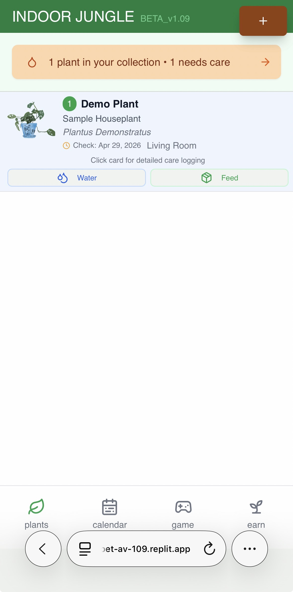
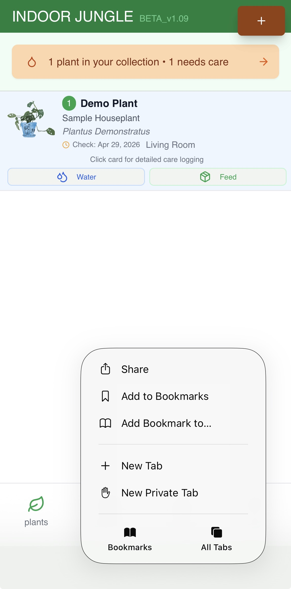
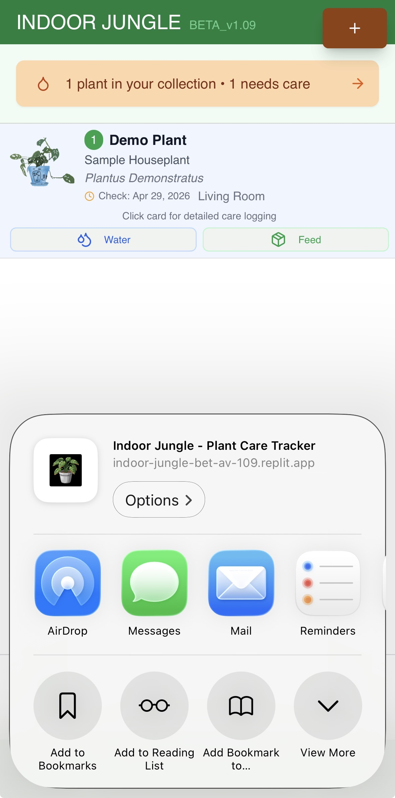
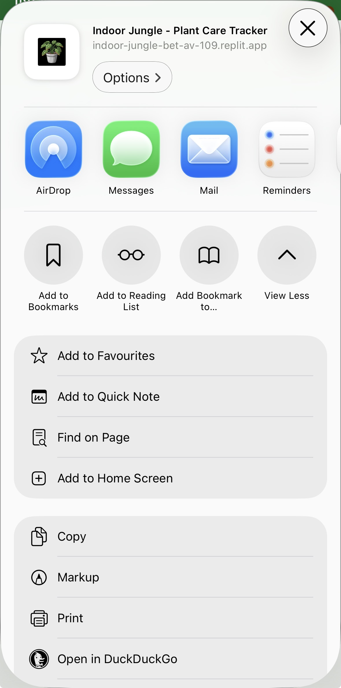
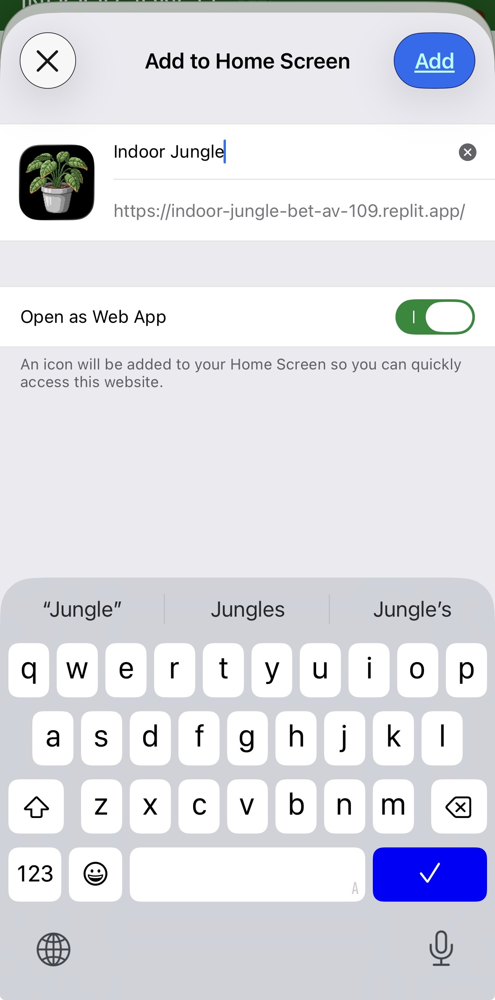

Install to Home Screen
Get the App-Like Experience
Indoor Jungle is a Progressive Web App. Install it to your phone's home screen for the best experience — no App Store required.
1. Open in Safari or Chrome

2. Tap the Share button

3. Scroll to "Add to Home Screen"

4. Confirm the name and tap Add

5. The icon appears on your home screen

6. Opens like a native app — no browser bar

7. Your app is installed and ready